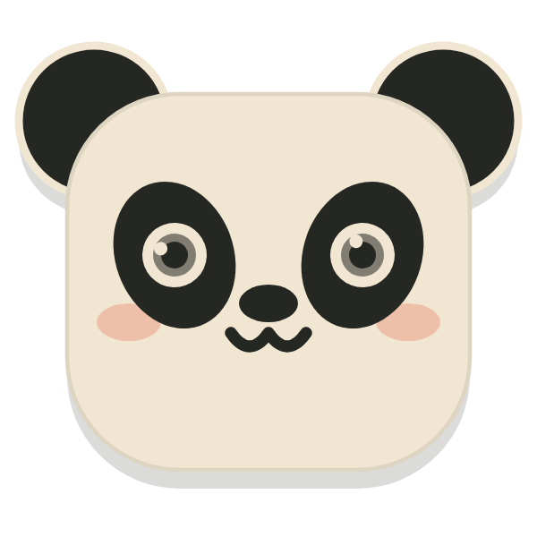

keep. — One Keep
One thing,
fully.
Write down the one thing you’ll do now. Give it to Panda and give it your full attention. Then write two lines about how it went. Small steps toward your promises — and a quiet record of every one.

✦twenty flashcards
✦one voice note to Maya
What got done
How do you feel?
Kept.one more stone · 25 min of focus
The ritual
Four quiet steps.
Every day.
No feed, no streak pressure, no noise. The same small ritual each time, so starting gets easier than putting it off — and finishing feels like something.
-
first
Check in
How are you, really? One tap, and a line about why if you like.
-
then
Write a Keep
The one thing you’ll do now, filed under a promise you’re keeping to yourself.
-
then
Focus
Hand it to Panda and put the phone down. A calm paper timer counts the minutes.
-
last
Reflect
What got done, what’s left. Panda reads it back to you, kindly. One more stone.
Getting started
Your first Keep,
in two minutes.
Here’s exactly what to tap. There’s nothing to set up first — no goals to configure, no plan to fill in.
Sign in
Open keep. and choose Continue with Apple, Continue with Google, or your email for a one-time link. No passwords.
Your Keeps sync to your other devices from here on.Check in
Pick how you feel right now — one tap. Add a line about why, if you like. It’s once a day, and Panda remembers.
Over a month, these become your mood jar.Write your Keep
On the paper card, write the one thing you’ll do now. Tap the pill to file it under a Promise, add Tags + if you like, and set how long.
Small is good. “Twenty flashcards” beats “learn Spanish”.Give it to Panda
Tap Give it to Panda. The timer starts — put the phone down. Need a little longer? + 5 min. Stopping early is fine too.
You’ll get a gentle alert when time’s up.Reflect
Write what got done and what’s left, and pick a mood. Panda reads it back with a few kind words. One more stone on the cairn.
Two lines is plenty. Honest beats long.Come back tomorrow
Tap + for your next Keep. Open Grow to watch the days add up, and Panda Box to find any Keep again.
Set the Horizon once — from the big picture down to today.
keep. — free
Everything the ritual needs.
Free, always.
No trial clock on the basics. Write, focus, reflect, and see your days take shape — offline, synced across your devices, and yours to export any time.
Panda Box
Every Keep you’ve made, by day. Search it, filter by promise or tag, and start a recent one again in a tap.
The Horizon
From the big picture down to today. Each note shows when you last touched it — and nudges when it’s gone stale.
Your last three months
Every day you kept, as a dot. Patterns show up on their own — a strong Monday, a quiet weekend.
keep.+
Watch it
add up.
Panda’s fuller read of your days: when your focus lands, how your month has felt, and where your time really goes.
Where the Sun Falls
Every session lands on your day. The sun settles where your focus tends to fall.
Your mood jar
Every check-in drops a pebble in.
Promise Journeys
Each promise is a road with no finish line. Every Keep a step, a cairn every ten.
By promise
Every Keep a bead on its promise’s thread. See where your time really goes.
Echoes
A note you left on another day, handed back when it matters.
Hard start, good finish. Remember that the first ten minutes lie.You, after a Keep · 12 August
Mood Weather
Each day’s sky, painted from every mood you logged.
Private by design
What you write
stays yours.
keep. holds the most personal thing an app can: what you meant to do, and how it really went. It is treated that way.
No ads, no trackers
No advertising identifiers, no data brokers, nothing sold. Your writing is never used to train anything.
Analytics off by default
Usage analytics only run if you switch them on — and never carry a word you wrote.
Take it, or delete it
Export everything as JSON and CSV, or delete your account, straight from Settings.
Read the Privacy Policy — written to be read.